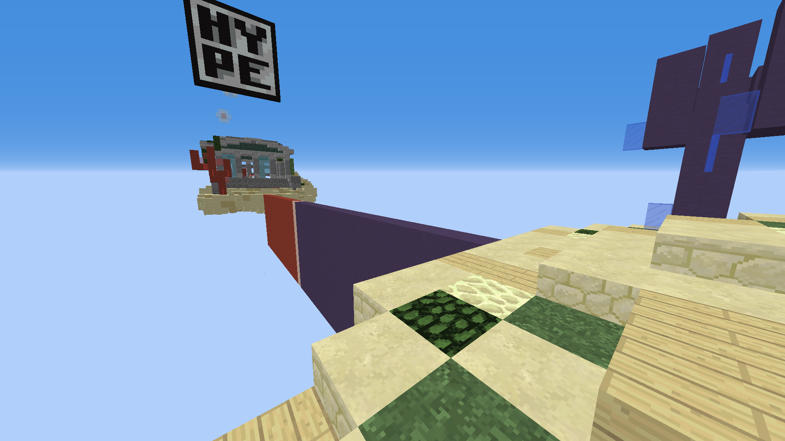

How to play The Bridge
The Bridge is a duels minigame consisting of two bases (each with goals), and a narrow bridge in between. The Goal of the game is to get from your base to their goal five times. First to Five wins.
The "Atlantis" Map in The Bridge
Terminology
- goals
- hole in opponent's base where you get a point if you jump in
- base
- two per map, several maps with different bases, contains the goal
Goals
The main goal of the game is to score five points in your opponent's goal. This can be followed by several sub-goals.
- Block the opponent's path to your goal
- Kill the opponent to delay them
- Avoid the opponent while still going fast to the goal
Steps
- At the start of the game, you will be in your cage above your base (This is a good time to eat a golden apple)
- When the timer finishes counting down, the cage disappears and you should run towards the other goal
- If you get to the other goal before they get to yours, you gain a point
- You need 5 points to win
Techniques
Click here to learn some integral bridge techniques